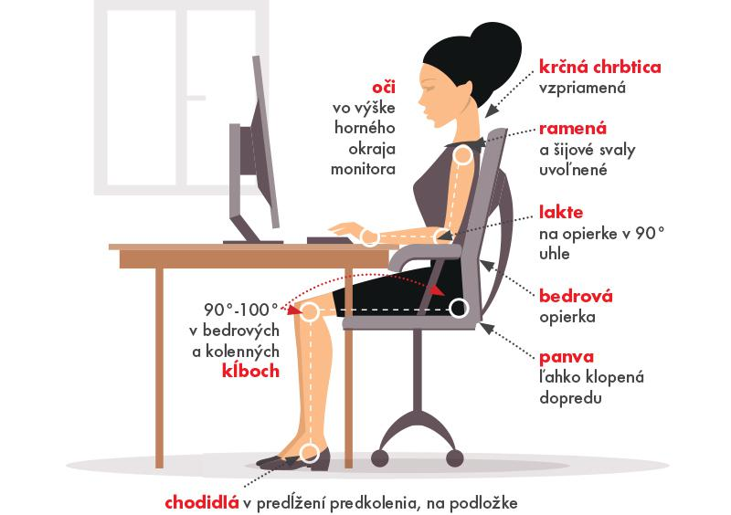

Ako správne sedieť
Sedenie vplýva na naše zdravie
„Sedenie je fajčenie súčasnosti."
– Nilofer Merchant v časopise Harvard Business Review.
„V Spojených štátoch amerických sa ročne premárni v priemere 149 miliónov pracovných dní kvôli bolestiam chrbta v bedrovej oblasti.“
– Svetová zdravotnícka organizácia WHO.
„K nesprávnemu držaniu tela dochádza často, keď sa človek sústredí na momentálnu prácu. Je veľmi ťažké vedome si udržať správne držanie tela.”
„Ľudia strávia v priemere pol dňa (10 hodín) sedením a sú aktívni len menej než 2 hodiny denne.”
Ako správne sedieť
1. Upravte si svoje pracovné prostredie
- Uprednostňujte ergonomické stoličky.
- Prispôsobte si výšku stola a stoličky, pozíciu operadla a uhol naklonenia klávesnice.
- Ubezpečte sa, že je horný okraj obrazovky na úrovni vašich očí alebo mierne nižšie. Ak používate notebook, snažte sa ho podložiť knihami tak, aby ste dosiahli výšku, ktorú potrebujete, a používajte doplnkovú klávesnicu a myš.
- Umiestnite obrazovku minimálne do vzdialenosti vašej vystretej ruky.
2. Seďte vzpriamene
- Seďte tak, aby sa vaša zadná časť tela dotýkala operadla stoličky.
- Seďte vzpriamene a majte trup nahnutý v postavení 90 - 105°.
- Uvoľnite sa.
- Ubezpečte sa, že majú vaše lakte a zápästia podporu.
- Kolená by ste mali držať mierne nižšie než sú vaše boky.
- Chodidlá položte rovno na podlachu.
- Stanovte si ciele a sledujte pokrok pomocou Spine Hero.
3. Postavte sa a natiahnite sa
Naše telá sú uspôsobené na pohyb, a preto:
- Robte si pravidelné prestávky - postavte sa, natiahnite sa, zmeňte pozíciu sedenia alebo sa trošku prejdite.